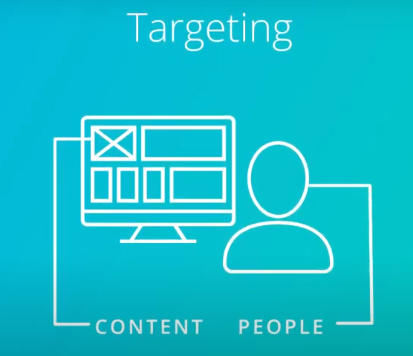

-->Display Ads have two charactistics in thems from user's prespective:
1-Display ads often have images
2-Display ads appear alongside content
-->the two characteristics are also what makes them different from search ads which don't typically come with images
-->if you as a marketer want to grab people's attention even before they really know about you, Display ads may be a better way to do that than using search ads, so Display ads work well in the early stages of the customer journey
-----------------------------------------------------------
-->Display ads appear on websites that partnered with Google and have allow google to run display ads on their sites
AdSense-->is the name of the platform that makes running the ads possible for the publishers
Google Display Network-->is the collection of sites that carry ads executed by Google

App ads-->are ads that are specifically designed to advertise apps on mobile and to encourage people to install your app, app ads use all google advertising has to offer, the app ads can run on the google search network

Google display network give you options in targeting: content or people



with responsive ad-->you can create one ad that will fit perfectly into my website's ad space
-------------------------------------------------------
-->Articulating your objective will help you determine what success looks like and how you will measure the results of the campaign
--------------------------------------------------------

------------------------------------------------------------
1. Pause keywords with high CPC
2. Expand the list of keywords with keywords similar to the best performing keywords